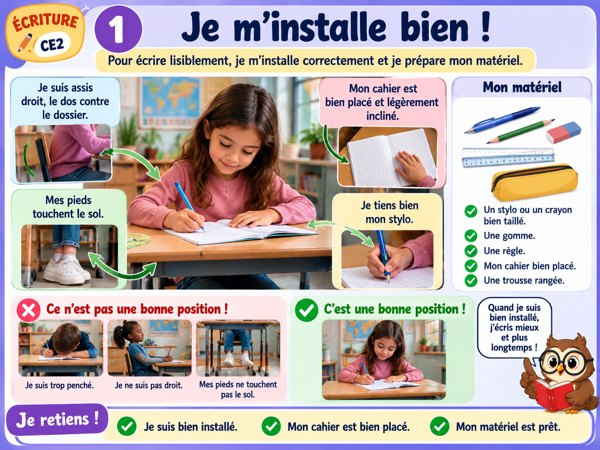
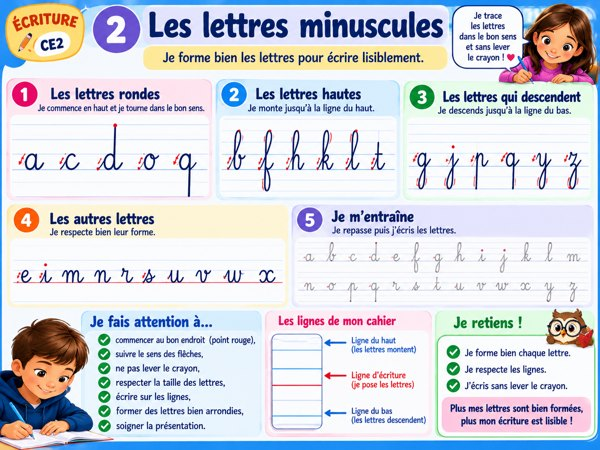
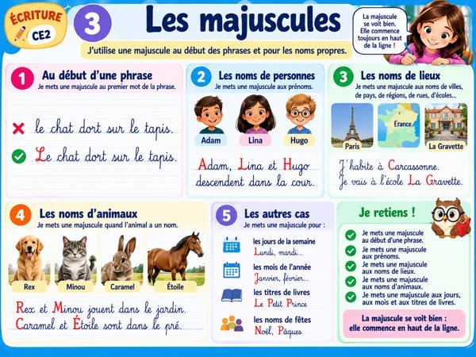
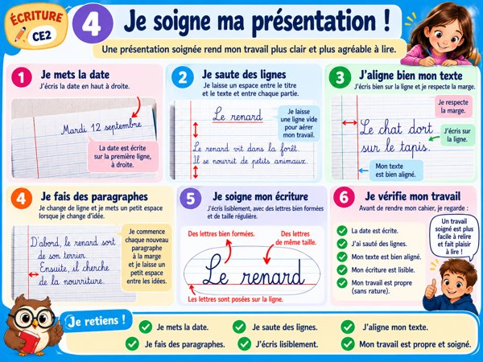
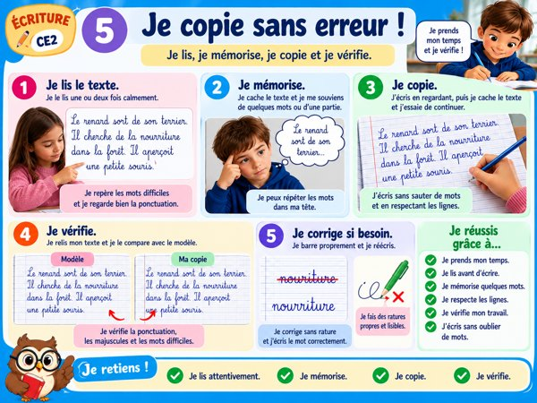
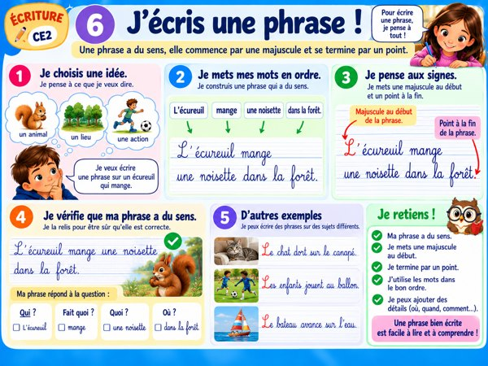

✍️ Mes affiches d’écriture CE2
6 méthodes illustrées à projeter en classe.

1. Je m’installe bienOuvrir l’affiche →
2. Les lettres minusculesOuvrir l’affiche →
3. Les majusculesOuvrir l’affiche →
4. Je soigne ma présentationOuvrir l’affiche →
5. Je copie sans erreurOuvrir l’affiche →
6. J’écris une phraseOuvrir l’affiche →